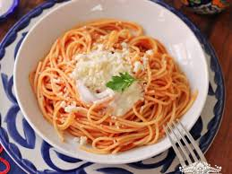

Mi Receta favorita
Hola, soy Angel
Ingredientes
- Pasta
- Salsa de tomate
- Queso rallado
Pasos
- Hervir pasta y esperar 20 minutos
- Escurrir la pasta
- Poner algo de mantequilla en el sartén
- Meter la pasta en un sartén
- Agregamos la salsa de tomate
- Revolvemos todo
- Lo servimos en plato
- Por ultimo, le ponemos el queso rallado al gusto
- Disfrutalo

Volver a lo bueno